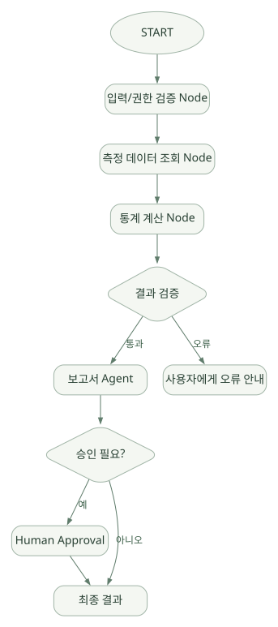

핵심 원리 / 단원 05
모델 판단과 코드 절차 조합하기
라우팅, AgentTool, 템플릿, Graph의 차이
먼저 연결해 보기
여러 Agent를 사용해도 제어 방식은 다를 수 있습니다. 모델이 대상을 고르는 라우팅, 다른 Agent를 Tool로 호출하는 방식, 코드로 실행 순서를 정의하는 Workflow를 분리해야 합니다.
Graph에서는 Node Output과 Session State가 서로 다른 데이터 통로입니다. 분기·병렬 통합·승인과 재개를 보며, MCP의 도구 연결과 A2A의 Agent 간 통신도 구분하세요. Skills는 실행 권한을 자동으로 부여하지 않습니다.
읽는 관점다음 단계를 누가 정하는지와 데이터가 어느 통로를 통해 전달되는지를 함께 읽으세요.
26. 세 가지 Multi-Agent 접근법#
같은 ‘에이전트 여러 개’라도 실행 구조가 다르다.
| 방식 | 중심 통제자 | 예시 | 위험/제약 |
|---|---|---|---|
| LLM 기반 Routing | 모델이 대상 Agent 선택 | 질문을 문서/데이터 전문가에게 분배 | 비결정적, 잘못된 라우팅 |
AgentTool 기반 호출 |
부모 Agent가 하위 Agent를 Tool처럼 사용 | 통계 분석자를 도구처럼 요청 | 컨텍스트·결과 형식 합의 필요 |
| 명시적 Workflow | 코드와 Graph가 순서/분기를 정함 | DB 조회 → 통계 검증 → 보고 | 설계 비용 증가, 일부 유연성 감소 |
반도체 영역에서는 수치 검증과 승인 순서를 보장해야 할 때 세 번째 방식이 유리할 수 있다. 반면 일반적인 공정 지식 Q&A는 LlmAgent + 검색 Tool부터 시작하는 것이 단순하다.
27. 전통적 Template Workflow: Sequential / Parallel / Loop#
공식 문서의 prebuilt Template Workflow는 자체 모델 판단 없이 미리 정의된 실행 흐름으로 하위 Agent를 조정한다. [D08]
Sequential#
Agent A(문서 검색) → Agent B(데이터 분석) → Agent C(보고서)- 단계가 명확하고 앞 단계 출력을 다음 단계에 반영하기 좋다.
output_key와 공유 State를 이용해 템플릿 단계 간 결과를 전달하는 패턴이 흔하다.- 앞 단계가 잘못된 결과를 기록하면 나중 단계로 전파될 수 있다.
Parallel#
+--> Agent A(문서 검색) --+
Root ----------+ +--> 결과 통합
+--> Agent B(데이터 분석) -+- 독립 분석을 병렬 수행해 전체 지연을 줄일 수 있다.
- 동시에 같은 State Key를 수정하는 경우 병합·순서·충돌 위험이 생길 수 있다.
- 병렬 실행이 항상 비용을 줄여주는 것은 아니다.
Loop#
분석 Agent → 검증 Agent → 조건 미충족이면 반복 → 충족 시 종료- 결과 품질이 부족하면 수정·재검토 가능.
- 최대 반복 수·시간·비용·안전 조건을 별도로 정의해야 한다.
- 끝나지 않는 피드백 루프를 막는 것이 핵심이다.
버전 고려: ADK 2.0 공식 문서는 템플릿 워크플로보다 그래프 워크플로 사용을 새로운 기본 방향으로 설명한다. 기존 Template Agent 코드를 읽을 때는 호환성과 deprecation 상태를 확인한다. [D08][D09]
28. ADK 2.0의 Graph-based Workflow#
기본 개념: Node는 하나의 실행 단위이고 Edge는 실행 흐름/조건을 지정하는 연결이다. LLM Agent도 하나의 Node처럼 사용할 수 있으므로, 결정적 코드와 비결정적 모델 판단을 하나의 그래프에서 구성할 수 있다. [D09]
넓은 도식은 가로로 이동하며 읽을 수 있습니다. 도식 크게 보기 ↗

원문에 수록된 학습용 도식입니다. 노드·화살표·분기 라벨을 보존해 다시 배치했습니다. 세부 조건과 예시·구현의 구분은 앞뒤 본문을 함께 읽으세요.
도식 원문 보기 (Mermaid)
flowchart TD
S((START)) --> V[입력/권한 검증 Node]
V --> Q[측정 데이터 조회 Node]
Q --> C[통계 계산 Node]
C --> D{결과 검증}
D -->|통과| R[보고서 Agent]
D -->|오류| E[사용자에게 오류 안내]
R --> H{승인 필요?}
H -->|예| A[Human Approval]
H -->|아니오| O[최종 결과]
A --> O여기서 Workflow 자체가 추론하는 것은 아니다. 조건 분기는 코드/노드/라우팅 이벤트가 결정하고, Agent 노드에 들어갔을 때만 LLM의 비결정적 판단이 발생한다.
공식 Python 예제의 API 형태#
# [공식 문서의 API 패턴을 단순화한 예]
from google.adk import Workflow, Event
def uppercase(node_input: str) -> str:
return node_input.upper()
def make_message(node_input: str) -> Event:
return Event(message=node_input)
root_agent = Workflow(
name="simple_graph",
edges=[("START", uppercase, make_message)],
)Workflow(edges=[(...)] ) 형태는 공식 예제에 명시돼 있다. 세부 노드 입력·출력 시그니처와 Event(message=...) 지원은 실제 사용 시 해당 버전의 가이드를 다시 대조한다. [D09]
Graph에서 다른 두 데이터 통로#
- Node Output: 이전 노드가 생성한 값을 다음 노드 입력으로 전달하는 통로 (
Event.output). - Session State: 여러 노드/Agent가 공유·지속할 필요가 있는 정보 (
ctx.state, state delta).
Node Output은 순수 함수 파이프라인에 적합하고, State는 장시간 이어지는 작업이나 분리된 노드가 공유할 상태에 적합하다. 둘을 무분별하게 섞지 않아야 작업 재현성이 높아진다. [D16]
29. Graph 노드 실행을 소스코드로 보기#
v2.13.0 공개 workflow/_base_node.py의 BaseNode.run(...)은 하위 구현인 _run_impl에서 생성한 값을 Event로 정규화한다. [S08]
# [원본 의미를 재구성한 핵심 의사코드]
async def run(self, *, ctx, node_input):
node_input = validate_input(node_input)
async for item in self._run_impl(ctx=ctx, node_input=node_input):
if item is None:
continue
elif isinstance(item, Event):
yield validate_event_output(item)
elif isinstance(item, RequestInput):
yield make_interrupt_event(item)
else:
yield Event(output=validate_output(item))왜 중요한가? 단순 Python 함수의 반환값도 Event로 정규화할 수 있고, RequestInput이 들어오면 실행을 멈추는 이벤트로 바뀔 수 있다. Graph는 모든 노드가 같은 Event 기반 계약을 사용하므로 데이터 전달·관찰·승인 경로를 통일할 수 있다.
읽기 순서#
workflow/_base_node.py: 노드 계약과 입출력 검증.workflow/의 Graph 실행·Scheduler 모듈: 노드 의존성·조건 분기·대기 처리.runners.py의_run_node_async: Runner와 NodeRunner 통합.workflow/_llm_agent_wrapper.py: LlmAgent를 Graph Node로 실행.events/event.py: Output/Route/NodeInfo 이벤트 표현.
위 경로 중 일부 내부 모듈은 버전별로 변경될 수 있다. [[S08]](https://github.com/google/adk-python/blob/v2.13.0/src/google/adk/workflow/_base_node.py)은 실제 읽은 파일 기준, 나머지 경로는 소스 추적용 단서이며 모든 내부 동작을 실행 검증한 것은 아니다.
30. Graph Routing, 동적 분기, Fan-out / Fan-in#
기본 전략:
input --> classify --> route=A --> process_A ---+
\-> route=B --> process_B ---+--> Join --> validate실무에서의 질문:
- 라우팅 조건은 모델이 판단하나, 검증 가능한 함수가 판단하나?
- 둘 이상의 경로가 선택되면 모두 실행되는가?
- Join 노드에서 일부 경로가 실패했을 때 전체를 실패 처리하는가?
- 출력 타입 불일치 및 스키마 위반이 어떻게 표현되는가?
- 재개 시 완료된 노드와 미완료 노드를 어떻게 구별하는가?
반도체 예시: 측정 항목이 CD_NM이면 CD 계산 노드, OVERLAY_NM이면 Overlay 분석 노드로 조건 분기. 단, 측정 단위와 분석 범위의 검증은 LLM이 아닌 코드 수준에서 처리하는 편이 안전하다.
31. Human-in-the-loop와 승인#
승인은 일반적으로 도구 실행 전 확인(Tool Confirmation)과 워크플로 노드의 입력 요청(RequestInput) 두 부류로 나눠 생각할 수 있다. ADK 2.x는 워크플로 확인·중단·재개 지원을 개선했다. [R02][R03][D09]
Agent/Workflow 결정
|
수행하려는 작업의 위험도 판단
|
+-----+---------------------+
| |
읽기/안전 작업 변경/위험 작업
| |
실행 승인 요청 이벤트
|
[허가 / 거부 / 수정]
|
재개 또는 종료승인 시 저장할 것: 요청 사용자·작업 도구·정확한 인자·대상 리소스·선택 시각·승인자·이력 버전·만료 시각. 승인 이후 파라미터가 바뀌면 기존 승인으로 실행하지 않아야 한다.
권장: 반도체 데모의 초기 범위는 읽기/분석 전용으로 두고, 공정 Recipe 변경·설비 제어 같은 쓰기 작업은 구현 대상에서 제외한다.
32. A2A와 MCP를 구분해서 사용하기#
| 프로토콜 | 주요 대상 | 비유 | 반도체 예시 |
|---|---|---|---|
| MCP | Tool / 외부 데이터·리소스 | 작업 도구를 연결하는 커넥터 | 사내 SQL 조회 Tool 제공 |
| A2A | 독립적인 Agent 시스템 | 전문가 간 업무 전달 | 문서 Agent ↔ 분석 Agent 협업 |
| 직접 Python Tool | 앱 내부 함수 | 같은 코드의 라이브러리 호출 | 데이터 유효성 검사 |
A2A를 쓸 때 고려할 것: 다른 Agent에 전달된 정보의 보안 등급, 사용자 신원 연동, Task 상태, 타임아웃, 재시도, 회수 가능성, 감사 로그. [D20]
33. Skills: 실행 Tool과의 차이#
ADK 문서의 Skill은 특정 과업의 지침·리소스·도구 등을 묶은 재사용 가능한 단위다. SkillToolset을 사용한 로딩과 점진적 Context 로딩 방식이 공식 문서에 설명된다. 2026년 기준 관련 기능의 실험적·플래그 기반 부분도 있으므로 버전별 안정성을 따져야 한다. [D17][R04]
Skills: '어떻게 일해야 하는가?'에 대한 재사용 가능한 절차/참조
Tools: '무엇을 실제 실행할 수 있는가?'에 대한 호출 가능 기능
Memory: '과거 무엇을 알고 있었는가?'의 검색 가능한 저장/회수예: wafer_yield_analysis Skill에는 분석 순서·최소 데이터 검증·용어 해석 규칙 등을 넣고, 실제 DB 조회/통계 계산은 승인된 Tool로 수행한다.
자주 생기는 오해: Skill을 로드했다고 새로운 네트워크/파일 접근 권한이 자동으로 생기는 것이 아니다. 스크립트·리소스·도구 실행에는 별도 실행 환경과 정책이 필요하다.